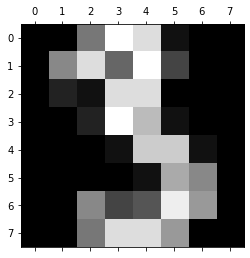
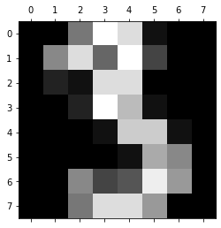

Digits Data Analysis and Modelling¶
import pandas as pd
from sklearn.datasets import load_digits
from sklearn.model_selection import train_test_split
from sklearn.svm import SVC
from sklearn.svm import NuSVC
from sklearn.svm import LinearSVC
import matplotlib.pyplot as plt
digits = load_digits()
# plt.gray()
for i in range(0,10):
plt.matshow(digits.data[i].reshape(8,8))
# plt.matshow(digits.images[i].reshape(8,8))
plt.show()


 



xTrain,xTest,yTrain,yTest = train_test_split(digits.data,digits.target,random_state = 30)
svcModelObj = SVC()
svcModel = svcModelObj.fit(xTrain,yTrain)
print(f"Training Acccuracy : {svcModel.score(xTrain,yTrain)}")
print(f"Testing Accuracy : {svcModel.score(xTest,yTest)}")
Training Acccuracy : 0.9962880475129918
Testing Accuracy : 0.9866666666666667